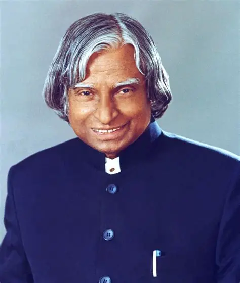

A Humble Beginning
Born on 15 October in Rameswaram, Tamil Nadu, into a family that valued hard work and integrity.
1931 — 2015 · THE PEOPLE'S PRESIDENT
The scientist who inspired a nation to dream, discover, and achieve the extraordinary.
Discover His Journey
A LIFE OF PURPOSE
Dr. Avul Pakir Jainulabdeen Abdul Kalam was one of India's most respected scientists and public figures. Born on 15 October 1931 in Rameswaram, Tamil Nadu, he grew up in a modest family. His early life taught him the values of discipline, honesty, hard work, and perseverance.
From an early age, Kalam was curious about the world around him. His interest in science and flight encouraged him to pursue aerospace studies. Through dedication and continuous learning, he built a distinguished career in India's scientific community.
Kalam made important contributions to India's space and missile programmes. He worked with the Defence Research and Development Organisation (DRDO) and the Indian Space Research Organisation (ISRO). His work helped strengthen India's technological capabilities, and he became widely known as the "Missile Man of India."
In 2002, he became the 11th President of India and served until 2007. During his presidency, he earned affection for his humility and his connection with students. Even after leaving office, he continued teaching and encouraging young people to pursue knowledge, innovation, and meaningful goals.
A lifelong commitment to learning and discovery.
Turning ambitious goals into meaningful action.
Serving people with humility and compassion.
MILESTONES & ACHIEVEMENTS
A look at the defining moments that shaped his remarkable life.
Born on 15 October in Rameswaram, Tamil Nadu, into a family that valued hard work and integrity.
Studied physics and later aerospace engineering, preparing for a career in aviation and technology.
Contributed to India's space programme and became closely associated with the development of indigenous launch vehicle technology.
Played a leading role in India's guided missile development programme, strengthening national scientific capabilities.
Received India's highest civilian award in recognition of his exceptional contributions to science and public service.
Served as the 11th President of India and became especially popular among students and young people.
Passed away on 27 July while delivering a lecture at IIM Shillong. His life continues to inspire generations of learners.
WORDS TO REMEMBER
Dream, dream, dream. Dreams transform into thoughts and thoughts result in action.
HIS LEGACY LIVES ON
Dr. Kalam's story reminds us that our circumstances do not have to define our future. With curiosity, courage, and consistent effort, every individual can contribute to a better tomorrow.
Back to top ↑